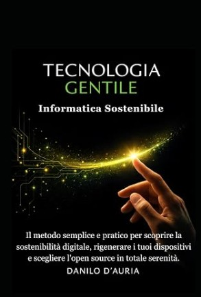

FeniceOS
«Un computer che funziona non è un rifiuto.»
FeniceOS è un sistema operativo libero e gratuito che parte da una chiavetta USB, senza toccare il disco, e rende di nuovo utilizzabili anche i computer più vecchi. È pensato per centri anziani, scuole, biblioteche e centri sociali: dentro c'è già il Professore Digitale per imparare l'informatica con calma.
- Gratuito
- Parte da chiavetta USB
- Nessuna telemetria
- Per PC a 64 bit
- BIOS e UEFI
Scarica FeniceOS
Un unico file, la ISO: si scrive su una chiavetta USB da almeno 8 GB e si avvia il computer da lì. Il file è grande, quindi è ospitato su SourceForge, il servizio gratuito usato da molti progetti liberi, con server in tutto il mondo.
💿 FeniceOS 2.2 — immagine live
- File
- FeniceOS_x64.iso
- Dimensione
- 2,26 GB
- Base
- Debian 12 «bookworm» · desktop MATE
- Computer
- 64 bit (amd64)
- Data
- 13 ottobre 2026
Impronta SHA-256 — serve a controllare che il file sia arrivato intero:
f5e269de68762c8c65d6266205c2a7150b0d9f9ac7a72ba3b0a2947b3da1a831
Le versioni precedenti stanno nella pagina dei file su SourceForge.
Controlla il file prima di usarlo
Confronta il risultato con l'impronta qui accanto: devono essere identici. Se sono diversi, scarica di nuovo.
Windows (PowerShell, nella cartella Download):
Get-FileHash .\FeniceOS_x64.iso -Algorithm SHA256Linux (Terminale, con il file .sha256 accanto):
sha256sum -c FeniceOS_x64.iso.sha256Deve rispondere FeniceOS_x64.iso: OK.
Tutto pronto, in italiano, dal primo avvio
Una scrivania ordinata, con la barra in alto e il dock delle icone in basso, e i programmi che servono davvero. Le voci che non servono sono nascoste, per non confondere.
Professore Digitale
Lezioni di informatica, esercizi, quiz con attestato e una guida che risponde alle domande. Funziona senza Internet.
Centro FeniceOS
Grandi pulsanti per partire: Professore, guida offline, quiz, video, ottimizzazione, suono di avvio e informazioni.
LibreOffice in italiano
Writer, Calc, Impress, Draw e Math, con dizionario e sillabazione. Apre e salva anche i file di Word, Excel e PowerPoint.
Posta elettronica
Thunderbird per l'uso di tutti i giorni e Claws Mail, leggerissimo, per i PC più datati.
Internet
Firefox ESR, stabile e consigliato da Debian, e Falkon, più leggero.
Negozio dei programmi
Cerca e installa altri programmi con un clic, dai pacchetti Debian e da Flathub.
Fenice Ottimizza
Una finestra guidata che rende il sistema più fluido con poca memoria: RAM compressa, anti-blocco, pulizia.
Suono e sfondo originali
Una breve melodia di avvio e lo sfondo «Alba della Fenice», creati apposta e liberi (licenza MIT).
Su quali computer funziona
| Cosa | Che cosa serve |
|---|---|
| Processore | A 64 bit (amd64). Non parte sui computer solo a 32 bit. |
| Memoria (RAM) | Consigliati 2 GB o più. Con poca memoria aiuta Fenice Ottimizza, che comprime la RAM. |
| Avvio | Il computer deve poter partire da chiavetta USB. L'immagine è ibrida: funziona con BIOS tradizionale e con UEFI. Se c'è Secure Boot e la chiavetta non compare, va disattivato. |
| Chiavetta | Almeno 8 GB. Verrà cancellata. |
| Disco | Non serve: FeniceOS gira dalla chiavetta e non tocca il disco del computer. |
Dalla ISO alla scrivania, in quattro passi
Scarica e controlla
Scarica la ISO e confronta l'impronta SHA-256, come spiegato qui sopra.
Scrivi la chiavetta
Su Windows usa Rufus: scegli la chiavetta giusta, premi SELEZIONA e scegli la ISO, lascia lo schema consigliato (GPT per i PC recenti, MBR per i vecchi) e premi AVVIA. Se Rufus chiede la modalità, scegli Immagine DD se la modalità ISO non funziona. In alternativa balenaEtcher, anche su Linux e macOS.
Avvia dalla chiavetta
Inserisci la chiavetta, accendi e premi subito, più volte, il tasto del menu di avvio (vedi la tabella). Scegli la chiavetta e premi Invio.
Entra nella sessione live
Nel menu di FeniceOS scegli la prima voce e attendi circa un minuto: quando senti il suono di avvio, sei dentro. L'utente è
user; se il sistema chiede la password per le operazioni di amministrazione, èlive.
| Marca | Tasto del menu di avvio |
|---|---|
| Acer, Asus, Lenovo | F12, Esc o F2 |
| HP | Esc, poi F9 |
| Dell | F12 |
| Samsung, Toshiba | F2, F12 o Esc |
| Mac con processore Intel | tieni premuto Alt (Option) |
Tutto quello che c'è da sapere, anche su carta
Il libretto di FeniceOS ha due parti: il vademecum di tutti i giorni (capitoli 1–14), per chi lo usa, e il manuale di creazione (capitoli 15–24), per chi prepara la chiavetta e costruisce la ISO.
Libretto d'uso e manuale
Da leggere sullo schermo · 40 pagine · PDF
Apri il PDF → 🖨️Libretto da stampare
Due pagine per foglio A4, da piegare a libretto · 20 fogli · PDF
Apri il PDF → 🧭Vademecum interattivo
La guida di FeniceOS da sfogliare nel browser, anche offline.
Apri → 📗Manuale «Tecnologia Gentile per Tutte le Età»
Il manuale di FeniceOS con le sue domande per livello.
Apri → 📄Vademecum dei quiz interattivi
Come usare in aula il quiz, la scheda risposte e lo schermo domande.
Apri il PDF → 🎓Vademecum del Professore Digitale
Le guide complete del programma incluso in FeniceOS, per Linux e per Windows.
Apri →Un solo progetto, tanti strumenti
FeniceOS, il Professore Digitale, il Grande Quiz e il libro «Tecnologia Gentile» nascono dallo stesso autore e dalla stessa idea: imparare con calma, offline, con contenuti verificati.
Professore Digitale
Il maestro paziente per imparare computer, telefono e Internet. Per Linux, Windows e telefono. Gratuito, senza pubblicità.
Vai al sito → ⏱️Il Grande Quiz dell'Informatica
264 domande dalle basi ai livelli esperti, più 66 domande del manuale FeniceOS, con timer, scheda risposte e schermo per l'aula.
Vai al sito →
📖 «Tecnologia Gentile: Informatica Sostenibile»
Il libro di Danilo D'Auria da cui nasce la filosofia di FeniceOS: mettere al centro la persona e non la macchina, riusare i computer invece di buttarli, combattere l'obsolescenza programmata con il software libero. Quattro principi: comprensibilità, accessibilità, sostenibilità e rispetto.
Il libro su Amazon →La ISO nasce da uno script, aperto a tutti
FeniceOS non si monta a mano: la costruisce lo script build_feniceos.sh, una ricetta che riparte ogni volta da zero e segue sempre gli stessi passi (un ambiente Debian 12 isolato con debootstrap, live-build, controllo dei pacchetti, prova del Professore Digitale, immagine ibrida e impronta SHA-256).
Servono
Un PC con Debian, Ubuntu o Zorin OS, Internet, circa 25 GB liberi e i permessi di amministratore. Dai 30 minuti a due ore.
chmod +x build_feniceos.sh
sudo ./build_feniceos.shIl risultato
Nella cartella ~/fenice_build trovi FeniceOS_x64.iso, il file .sha256 e il registro build.log.
Tutti i passaggi, le variabili e i problemi più comuni sono nel libretto, capitoli 15–24.
Per vedere che cosa entrerebbe nella ISO senza costruirla: ./build_feniceos.sh --tree-only.
Se qualcosa non va
La chiavetta non parte, il computer si avvia come sempre
Hai premuto il tasto del menu di avvio troppo tardi: spegni e riprova, premendolo a ripetizione appena accendi. Prova anche un'altra porta USB.
Se la chiavetta non compare proprio, entra nel BIOS/UEFI e disattiva Secure Boot (annota la modifica per poterla ripristinare). Se non basta, ricrea la chiavetta con Rufus in modalità Immagine DD.
Dopo il menu lo schermo resta nero
Riavvia e scegli la modalità sicura per la grafica nel menu di avvio. Il libretto, al capitolo 14, raccoglie gli altri casi.
Il Wi-Fi non funziona
FeniceOS cerca di includere i firmware delle schede più comuni (Intel, Realtek, Atheros, Broadcom), ma alcune schede ne richiedono altri. Nel frattempo usa il cavo di rete.
Posso installarla sul disco del computer?
Questa edizione è solo live: non ha un installatore e non tocca il disco. È la scelta più sicura per aule e centri, dove ogni avvio riparte pulito.
Dove finiscono i file che salvo?
Nella memoria del computer: allo spegnimento spariscono. Salva sempre su un'altra chiavetta, su un disco esterno o su un servizio online.
Funziona sui computer a 32 bit?
No: FeniceOS è preparata per i processori a 64 bit (amd64). Quasi tutti i computer degli ultimi 15 anni lo sono.
Il Professore Digitale non parte («Il server locale non si è avviato»)
Era un errore del pacchetto 3.5.2 del Professore Digitale, corretto nella 3.5.3. Lo script di FeniceOS prova sempre il programma prima di creare la ISO. Chiudi il messaggio, aspetta dieci secondi e riaprilo dal dock; se serve, riavvia. Il libretto ne parla al capitolo 6.
FeniceOS è gratuita anche per una scuola o un'associazione?
Sì, sempre. Puoi copiarla, usarla e regalare le chiavette. Per i testi e la grafica di FeniceOS vale la licenza CC BY-NC-SA 4.0: cita l'autore e non usarli a scopo commerciale.
Libera, e grata a chi l'ha resa possibile
| Componente | Licenza |
|---|---|
| FeniceOS: script di costruzione, suono di avvio, sfondo, Centro FeniceOS, Fenice Ottimizza | MIT |
| Libretto, testi di questo sito, logo e grafica di FeniceOS | CC BY-NC-SA 4.0 — © 2026 Danilo D'Auria |
| Professore Digitale | codice MIT · contenuti CC BY-NC-SA 4.0 |
| Tema WhiteSur · icone WhiteSur · Plank · font Inter | MIT · GPL-3.0 · GPL-3.0 · OFL-1.1 |
| Debian, MATE, LibreOffice, Firefox, Thunderbird e gli altri programmi | le licenze libere dei rispettivi progetti |
Il testo completo delle licenze è nel file LICENSE-FENICE.txt dentro la ISO. I sorgenti dei pacchetti Debian inclusi sono disponibili su
sources.debian.org e, nella versione esatta, su snapshot.debian.org;
lo script che costruisce la ISO è qui. FeniceOS è un progetto indipendente, non affiliato a Debian né ad altre aziende:
«Debian» è un marchio registrato di Software in the Public Interest, Inc.; FeniceOS non usa marchi, loghi, suoni o icone di Apple o di altre aziende.
Il sistema è distribuito «così com'è», senza garanzie: prima di usare un computer con dati importanti, fai una copia di sicurezza.